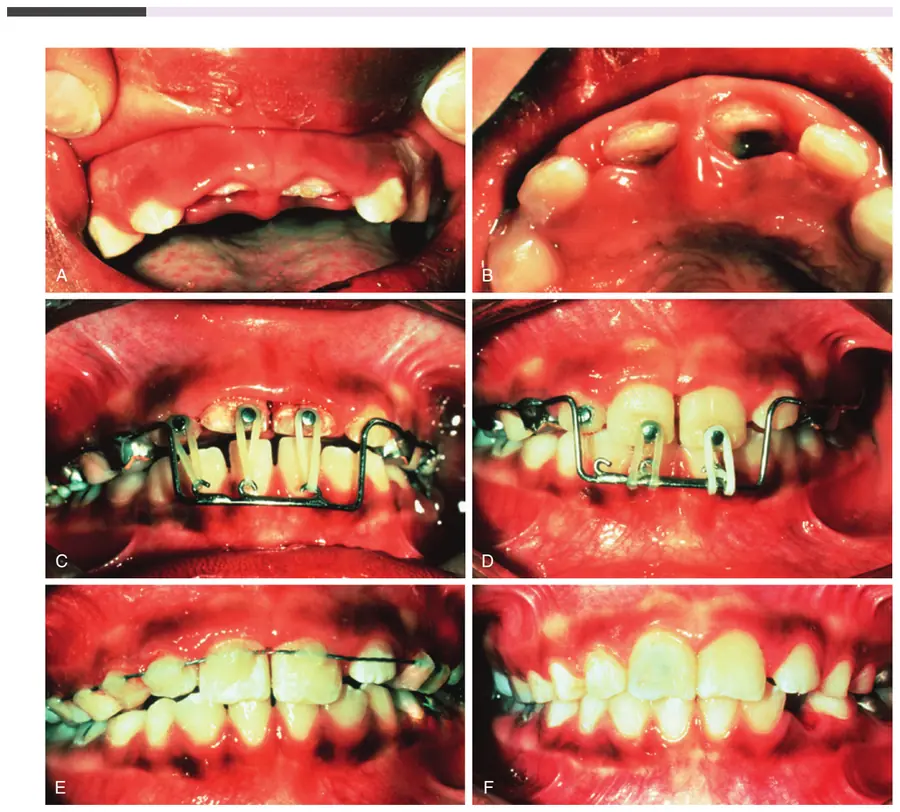
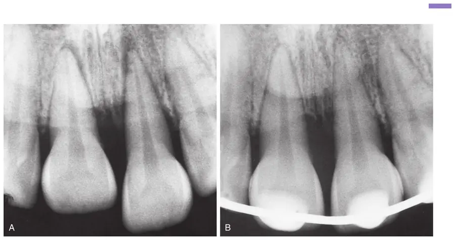

نسخه استخراجشده؛ ترجمه یا تأیید علمی انجام نشده است. وضعیت: captured
آولژن کامل از حفره، وخیمترین وضعیت برای یک دندان است — چون سلامت پالپ و بافتهای پریودنتال در خطر شدید قرار میگیرد.

و سه عامل تعیینکنندهی موفقیت درمان:
و قاعدهی طلایی: هرچه دندان زودتر کاشته شود، پیشآگهی بهتر است.
پس وقتی دندانپزشک تماسی از بیمار، والد، معلم، یا فرد مسئول دیگری دربارهی دندان کاملاً کندهشده دریافت میکند، باید تماسگیرنده را به این کارها هدایت کند:
و اگر بیمار نتواند دندان را جاگذاری کند، باید در محیط مناسبی گذاشته شود تا مراقبت توسط دندانپزشک ارائه گردد.
و حالا سلسلهمراتب محیط نگهداری — از بدترین تا بهترین:
پس ترتیب انتخاب: هنکس › شیر › سرم › بزاق › آب. و به یاد داشته باش که بهترین گزینه از همهی اینها، کاشت فوری خودِ دندان در حفره است.
وقتی بیمار به مطب میرسد، دندانپزشک باید تصمیم بگیرد آیا دندان قابل نجات است. و سه سناریو را باید از هم جدا کرد:

و چرا این دو مرحله؟ هرکدام دلیل خودش را دارد:
و آمادهسازی حفره — دو کار که نباید بکنی:
اسپلینت — و پنج ملاحظهی طراحی: تثبیت دندان کندهشده میتواند با موادی مانند سیم، آرچبار، و اسپلینت به دست آید، ولی چند عامل باید در نظر گرفته شوند:
و حالا مدتهایی که باید حفظ کنی — بیحرکتسازی بر پایهی نوع آسیب:
و پیامد بلندمدت: کاشت مجدد موفق دندانی طبیعی و کارآمد میدهد که در بیشتر موارد به درمان اندودنتیک نیاز خواهد داشت. ولی مقادیر متفاوتی از تحلیل ریشه و آنکیلوز ممکن است رخ دهند — و پیدایش این نشانهها پیشآگهی دندان را تعیین میکند. اگرچه عفونت حاد دندانی نادر است، میتواند به از دست رفتن دندان کاشتهشده بینجامد. پس این بیماران باید با دقت در فواصل منظم و مکرر برای مدتی پس از کاشت پیگیری شوند.